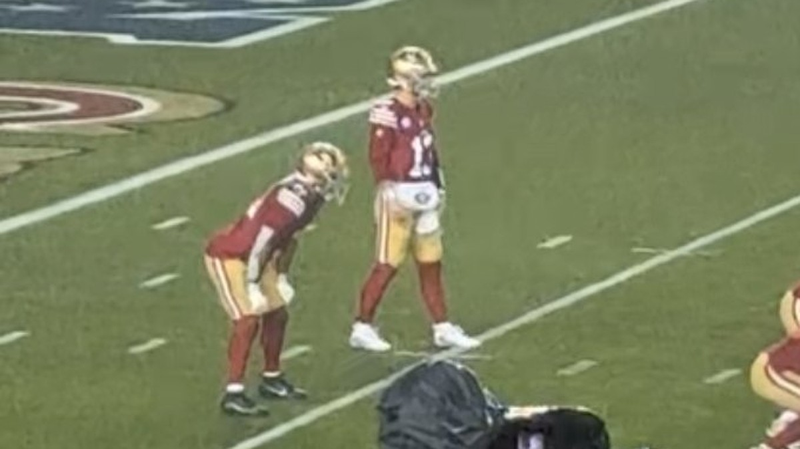

Brock Purdy's Ankle Has the Whole Bay Holding Its Breath
He didn't practice Wednesday. Kyle says it's a low ankle sprain, not a high one, and that there's a "possibility" he misses Seattle. I've checked my phone forty times since lunch.

I was eating a turkey sandwich at my desk when the group chat lit up. No words at first. Just a screenshot and then my buddy from San Jose typing "no no no no no" like he was trying to undo it.
Brock Purdy didn't practice today. Ankle.
I put the sandwich down. I'm not proud of how fast I went from "great week, we're 9 and 1, I'm going to enjoy Thanksgiving" to pacing around the break room refreshing everything I could find. Three days ago this guy was the favorite person of an entire stadium in Mexico City. Now I'm Googling "low ankle sprain recovery time" like I went to med school.
What we actually know
He hurt it in the second quarter on Sunday against the Vikings. And this is the part I keep holding onto: he didn't leave. He finished the game. He went 21 of 26 for 255 and three touchdowns with that ankle, and I watched every snap of it and never once thought he was hurt. If anything I thought he looked like he could walk on water.
Kyle said it's not a high ankle sprain. Thank God. If you've followed this team for any length of time you know the high ankle is the scary one, the one that turns "day to day" into "see you in three weeks." A low ankle sprain is the kind of thing quarterbacks play through all the time. He's listed as day to day.
But Kyle also used the word I didn't want to hear. He said there's a "possibility" Brock doesn't play Sunday.
A possibility. Kyle Shanahan doesn't throw words around in press conferences. He'll give you nothing for weeks. So when he volunteers that one, on a Wednesday, about the MVP favorite, I take it seriously.
Not a high ankle sprain. Finished the game. Day to day. I'm repeating it like a rosary.
Why Thursday and Friday matter so much
I've been through enough of these weeks to know how it goes. If he's out there Thursday, even limited, even just jogging around in a helmet and throwing to nobody, I'll exhale. If he's a full go Friday, he's playing, and I'll pretend I was never worried.
If he sits out Thursday and Friday too? Then we're talking about Mac Jones against Seattle, and you'll find me in the garage reorganizing tools I don't use to keep my hands busy.
My honest guess, and I'm a fan so take it for what it is: he plays. Low ankle, finished the game, and he plays because he's Brock Purdy and he's been getting off the turf since he was Mr. Irrelevant. But I'd be lying if I said I'd bet my house on it.
Who he's been this year, in case anybody forgot
Purdy so far this season. Mac across eleven appearances last season, when he had to hold the fort. This year he's thrown exactly one pass.
Look at Brock's column. Twenty three touchdowns and five picks. Nine yards an attempt. He's run for 222 more on top of it. We're 9 and 1, three games up in the division, and he's the reason everybody outside the Bay has finally stopped saying "system quarterback" with a straight face. Mostly.
And now look at Mac's. Mac's a guy who kept us afloat last year when Brock was banged up, and who stood on the sideline all season watching and waiting. When the trade rumors popped up before the deadline, I wrote that we had the best backup in football and we'd be crazy to move him. I'll be honest, I wrote it because it felt right, not because I ever wanted to find out.
Well. Here we might be.
And of course it's Seattle
Of course it is. It couldn't be some team limping in at 3 and 7. It's the Seahawks. At Levi's. Sunday at 1:25 on FOX. They're 6 and 4, they're coming off a bye with two weeks to rest up and stare at film of us, and they'd love nothing more than to wreck our season in our own building.
I don't need to remind anybody what happened the last time Seattle came to Levi's. Week 18 last season, 13 to 3, on our field. Then 41 to 6 in the divisional round, and then they went and won the whole thing. I still can't watch highlights from that January. I've tried. I get about two plays in and close the laptop.
We did get them back in October. 32 to 29 up at their place, the 12th man screaming the whole way, and I aged about a decade in three hours. Brock was the one standing at the end of that game. I want him standing at the end of this one too.
We're three point favorites. I saw that and laughed, because no line in the world makes me feel safe against these guys.
What I'm doing about it
Nothing. There's nothing to do. That's the worst part about being a fan. I can't tape an ankle. I can't call the trainer. All I can do is refresh, and wait for somebody in the media scrum on Thursday to tweet whether number 13 was out there throwing.
So I'm doing the superstitious stuff. My Purdy jersey's going back in the drawer until Friday, because I wore it Sunday and he got hurt in it, and I'm not taking any chances with the universe. My wife thinks I've lost it. She's not wrong.
If Brock goes, we're fine. If Mac goes, we're probably fine, and I'll be screaming for him just as loud. I just want this team healthy in January for once. Once. Is that too much to ask?
Check back Thursday. I'll be here. Obviously.
For more, there's the way Brock carved up the Vikings in Mexico City on that ankle, the 32 to 29 win in Seattle in October, and why I said we had to keep Mac Jones at the deadline. Every other banged up Niner is on the 49ers injury report, and Brock's place in the record books lives on the Purdy passer rating page.
More coverage: 49ers · Bay Area NFL · Bay Area Sports Blog home